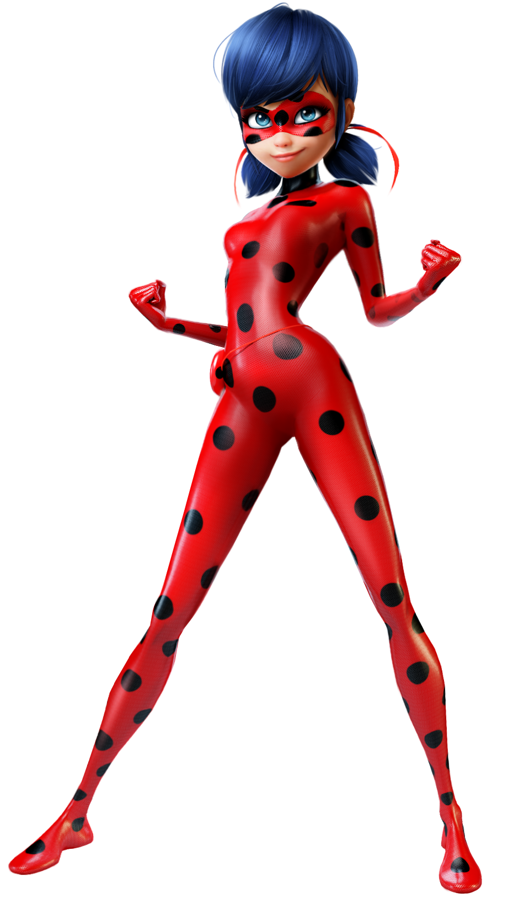

Ladybug is a superheroine who saves Paris regularly. She with Chat Noir protect us from other akumatized citizens. She is known for using her lucky charm to get herself and Chat Noir out of sticky situations. Her identity is unknown but is better left this way because her greatest enemy Hawkmoth could use her identity or Chat Noir's against or favorite heroes. She has heightened senses, strength, and agility. Ladybug is known for her blue eyes, red suit with black spots and black hair. She also has a magic yoyo with an endless string and cant be broken. You can find more about her crime-fighting feline friend Chat Noir here.
Hawkmoth is a villain who akumatizes the people of Paris, turning them into supervillains. He then sends them to retrieve Ladybug and Chat Noir's miraculous's. The miraculous are the magic jewels that give Chat Noir and Ladybug their powers. When a person feels a negative emotion Hawkmoth can take advantage of that and send his Akuma to turn them into a supervillain. An Akuma is a butterfly that is under the control of Hawkmoth and allows the infected person to gain superpowers controlled by Hawkmoth. Hawkmoth possesses the hawk miraculous which allows him to do all this. Nobody knows the secret identity of Hawkmoth, but don't worry Ladybug and Chat Noir are out there looking for him and protecting us every day.

Try to stay positive, dont let your negative emotions get the best of you! But if you do get akumatized know that its ok, no one blames you because everyone gets angry sometimes so don't worry!
Kwamis are the magical creatures that live in the miraculous jewels and give the holders their powers. After a miraculous holder de-transforms, they need to feed their kwami, and just like our heroes, the kwamis are animal-themed. It is unknown how many kwamis there are, or where they are being kept. A Kwami's power can be boosted such as the water upgrades when Syren was akumatized. To find out more about other partners of Ladybug and their powers click here!
